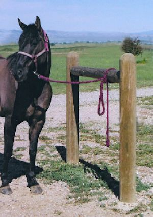

Bring your horse to a level area, and tie them to a hitching post or something of the likeness.
Brush your horse down first with the stiff brisseled brush; this is to get larger dirt chunks out of the fur. Then Use the soft brush to whisp away the dirt and finer hair along the back and girth area. This is behind the shoulder directly down to behind the front legs and under the horses belly.
First thing you want to do is check the pad with your hand for poky bits which can iritate the horses back. Once clear, place the pad on the horses back evenlying on both sides. The withers (the slight hump towards the end of the mane) should just be covered slightly with the saddle pad.
Place the saddle a little high on the withers, then silde it down slightly until your hand feel just snug between the horses body and the saddle. Let down your strap (left side of the horse) and girth (right side of the horse). Reach under the horse to grab the girth, slipping the strap threw the girth ring and up threw the cinch ring. Remember to tighten as you go to secure the saddle. As with a belt buckle, secure your cinch in one of the holes, placing the remaining through a D-ring. Check the saddle, the girth should be snug not excessively tight.
None of these photos are mine, all rights reserved to owners. I used them for a school project. CowboyWay.com & Pinterest